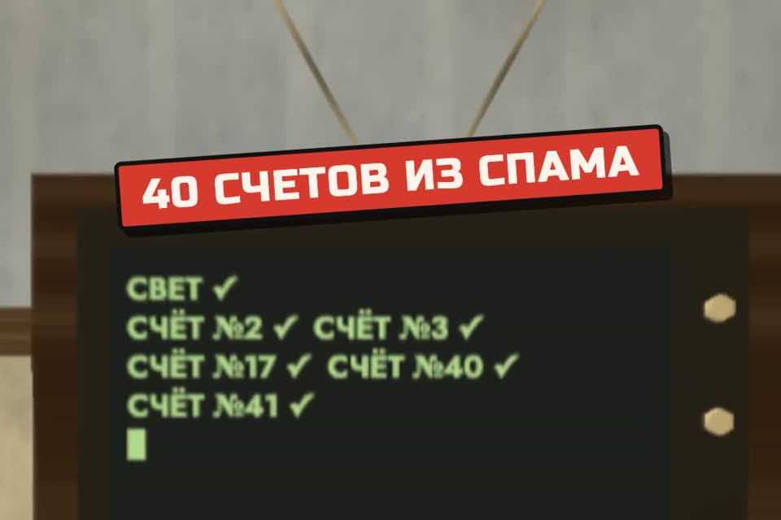

Дашь ИИ карту? Сначала права
Обещанные правила: что давать помощнику от банка и почты, отдельная карта с лимитом и промпт для проверки счёта. Пять доступов из карусели — ниже.
- бесплатно
- платите вы, а не бот
- пароли в чат не попадают
К ролику «Оплачивай все счета» и карусели «5 доступов» · обновлено 27 октября 2026

Ставить ничего не нужно, подойдёт любой чат. Пароли, коды из СМС, PIN, CVC/CVV и кодовое слово банка в чат не вставляйте.
Первый результат за 4 шага
Заведите отдельную карту с лимитом
Лимит, который работает в банке, надёжнее любой инструкции боту.
- Если куда-то нужно вписать карту (подписки, сервисы, автоплатежи), заведите для этого отдельную карту, лучше виртуальную, и держите на ней небольшую сумму. Многие банки выпускают виртуальную карту в приложении за минуту.
- Поставьте лимит на операцию и на день в настройках карты. Лимит, который работает в банке, надёжнее любой инструкции боту.
- Основную карту и счёт с зарплатой или выручкой не подключайте никуда, где решения принимает программа.
Отдельная карта с небольшой суммой и лимитом на операцию и на день. Основная карта никуда не подключена.
Дайте помощнику правила: платите вы, а не бот
Помощник готовит список, кнопку «Оплатить» жмёте вы.
- Самый надёжный вариант: помощник готовит список к оплате, а кнопку «Оплатить» жмёте вы в приложении банка.
- Если сервис умеет платить сам, включайте подтверждение каждой операции. Удобство «он сам всё оплатит» стоит ровно столько, сколько лежит на карте.
Вставьте промпт в начало разговора или в инструкции проекта (Claude Projects, «Инструкции» в ChatGPT). Список получателей заполните своим.
Ты помогаешь мне разбирать счета и платежи. Правила, которые нельзя нарушать:
1. Ты ничего не оплачиваешь сам. Ты готовишь список «что оплатить»,
я проверяю и плачу сам.
2. Каждый счёт сверяй со списком моих постоянных получателей:
[свет — ПАО …, интернет — ООО …, аренда — ИП …].
Счёт от того, кого нет в списке, помечай «НОВЫЙ ПОЛУЧАТЕЛЬ — не платить без меня».
3. Признаки подозрительного счёта: «срочно», «до пятницы», угроза отключения,
новые реквизиты у старого получателя, ссылка на оплату вместо реквизитов,
сумма не похожа на прошлые. Такие счета выноси отдельным списком.
4. Никогда не проси и не принимай от меня пароли, коды из СМС, PIN,
CVC/CVV, кодовое слово банка. Если я сам их пришлю — скажи, что их надо сменить.
5. Ты не звонишь и не пишешь в банк от моего имени и не представляешься мной.
6. Если не уверен — пиши «не уверен» и почему. Не угадывай.
Формат ответа по пачке счетов: таблица «получатель — сумма — срок — в моём списке? —
подозрительно? — что делать». Внизу итог: сколько к оплате и что требует моего решения.По пачке счетов — таблица «получатель — сумма — срок — в моём списке? — подозрительно? — что делать» и итог. Счета от незнакомых помечены «НОВЫЙ ПОЛУЧАТЕЛЬ — не платить без меня».
Проверьте счёт до оплаты
Счета только от известных получателей.
- Составьте список постоянных получателей: свет, связь, аренда, поставщики, с ИНН и банком. Счёт от кого-то нового сначала проверяете вы.
- Признаки поддельного счёта: «срочно», «до пятницы», угроза отключения, новые реквизиты у старого получателя, ссылка «оплатить» вместо реквизитов, похожий, но чужой адрес отправителя.
- Если сомневаетесь, позвоните получателю по номеру с его официального сайта, а не из письма.
Проверь этот счёт до оплаты. Мне важно не заплатить мошенникам.
Счёт: [вставьте текст письма или счёта целиком, с реквизитами]
Кто обычно выставляет мне такие счета: [название, ИНН, банк, если знаете]
Сколько я платил в прошлый раз: [сумма]
Ответь по пунктам:
1. Совпадают ли получатель, ИНН и банк с теми, кого я знаю?
2. Есть ли признаки фишинга: срочность, угрозы, ссылка вместо реквизитов,
ошибки в названии, почта с похожего, но чужого домена?
3. Сумма похожа на обычную?
4. Вердикт: «платить» / «сначала проверить звонком по номеру с официального сайта» / «не платить».
Не советуй переходить по ссылкам из письма.Ответ по четырём пунктам и вердикт: «платить», «сначала проверить звонком по номеру с официального сайта» или «не платить».
Проверьте, что уже выдали
Всё, что не узнаёте, отключите.
- В каждом сервисе откройте настройки: «Подключённые приложения», «Интеграции», «API-ключи», «Пользователи и роли». Всё, что не узнаёте, отключите. Ключи, которые лежали в чатах и файлах, перевыпустите.
- В Claude Code команда
/permissionsпоказывает, что агенту разрешено и что запрещено. Запреты можно записать в.claude/settings.json, например"deny": ["Read(./.env)", "Bash(curl:*)"].
Промпт, который поможет пройтись по списку (паролей и ключей в чат не вставляйте, только названия сервисов и прав):
Помоги проверить, какие доступы я выдал ИИ-агентам и интеграциям.
Пароли и ключи я тебе не показываю, только названия и права.
Мои сервисы и что подключено: [банк — …, почта — …, CRM — …,
приём оплат — …, соцсети — …, другое — …]
Какие агенты и программы работают с ними: [например, Claude Code, бот в Telegram,
интеграция CRM с почтой]
По каждому сервису ответь таблицей:
сервис — какие права сейчас — что из этого опасно — что оставить
(только чтение / лимит / подтверждение человеком) — где это меняется в настройках.
Правила: деньги, отправка от моего имени, удаление и выгрузка базы —
только после моего подтверждения. Если не знаешь, где настройка в конкретном
сервисе, так и напиши, не выдумывай пункты меню.
В конце: три самых опасных доступа, которые надо закрыть сегодня.Все промпты страницы отдельным файлом: prompts/karta.md.
Таблица по каждому сервису: какие права сейчас, что опасно, что оставить и где это меняется. В конце три самых опасных доступа, которые надо закрыть сегодня.
Пароли, коды и кодовое слово — никогда
- Пароли, коды из СМС, PIN, CVC/CVV и кодовое слово банка не вставляйте в чат с нейросетью и не храните в файлах, которые она читает.
- Помощник не звонит и не пишет в банк от вашего имени и не говорит «я — это он». С банком говорите только вы, по номеру с обратной стороны карты.
- Если пароль уже попал в переписку, смените его и включите вход по второму фактору.
Пять доступов: что давать вместо полного
Три правила на все случаи: только чтение по умолчанию, лимит на сумму и число действий, подтверждение человеком для денег, отправки и удаления.
Банквыписка и черновик платежа, без подписи
Давать: выписку (файл или доступ на просмотр) и подготовку черновика платежа. Не давать: подпись и отправку платежей. Во многих банках для бизнеса есть роль сотрудника без права подписи — её и выдавайте. Если без карты никак, то отдельная карта с лимитом (шаг 1).
Почтачтение и черновики, без отправки
Давать: чтение и черновики. Не давать: отправку от вашего имени, удаление и пересылку. Через почту сбрасываются пароли от остальных сервисов, поэтому это самый дорогой доступ из пяти.
CRMотдельный пользователь с просмотром
Давать: отдельного пользователя с просмотром сделок и постановкой задач. Не давать: экспорт базы, массовые рассылки и удаление. База клиентов — это персональные данные, за их утечку отвечает владелец.
Платёжка (приём оплат, эквайринг)отчёты и ключ только на чтение
Давать: отчёты и выгрузки, ключ только на чтение, если сервис такой выдаёт. Не давать: ключ, которым можно делать возвраты и выплаты. Возвраты оформляйте сами.
Только чтение там, где можновыписка, черновики, копия таблицы
- Для разбора расходов помощнику хватает выписки (файл из банка), а платёжные права ему не нужны.
- Почта: «прочитать и составить черновик» и «отправить от моего имени» — это разные права. Давайте первое. Отправляйте сами.
- CRM и таблицы: доступ на просмотр или к копии. Права на удаление и массовую рассылку оставьте себе.
Что было в роликегде ошибка в постановке задачи
В ролике Claude получил задачу «оплачивай все счета, что придут» и оплатил сорок счетов из спама, а потом назвал банку пароль от почты. Сюжет вымышленный, но каждая ошибка в нём настоящая.
Банк, суммы и персонажи вымышленные. Ошибка в постановке задачи: «оплачивай все счета» — это желание, а не правило. Исполнитель, человек или ИИ, выполнил его буквально. Не было списка получателей, лимита, подтверждения и запрета представляться хозяином. Банк заблокировал карту, и это как раз правильная реакция банка на странные платежи.
Если застряли
Пароль или код уже попал в чат
Смените его и включите вход по второму фактору. Если это ключ, который лежал в чатах и файлах, перевыпустите его.
Банк заблокировал карту
Это защита, а не поломка. Разблокировка идёт через вас лично: звонок по номеру с карты или приложение банка. Помощник в банк не звонит и не пишет.
Счёт от знакомого получателя, но что-то не так
Новые реквизиты у старого получателя — признак поддельного счёта. Позвоните получателю по номеру с его официального сайта, а не из письма.
Чего промпт не сделает
- Не видит ваш банк. Он проверяет текст счёта, который вы дали. Последнее слово за звонком получателю и выпиской.
- Не заменит настройки банка. Лимиты и подтверждения ставятся в приложении банка, а не словами в чате.
- Не гарантирует, что фишинг будет пойман. Новые схемы выглядят аккуратно. Правило «новый получатель — только после проверки» работает и без нейросети.